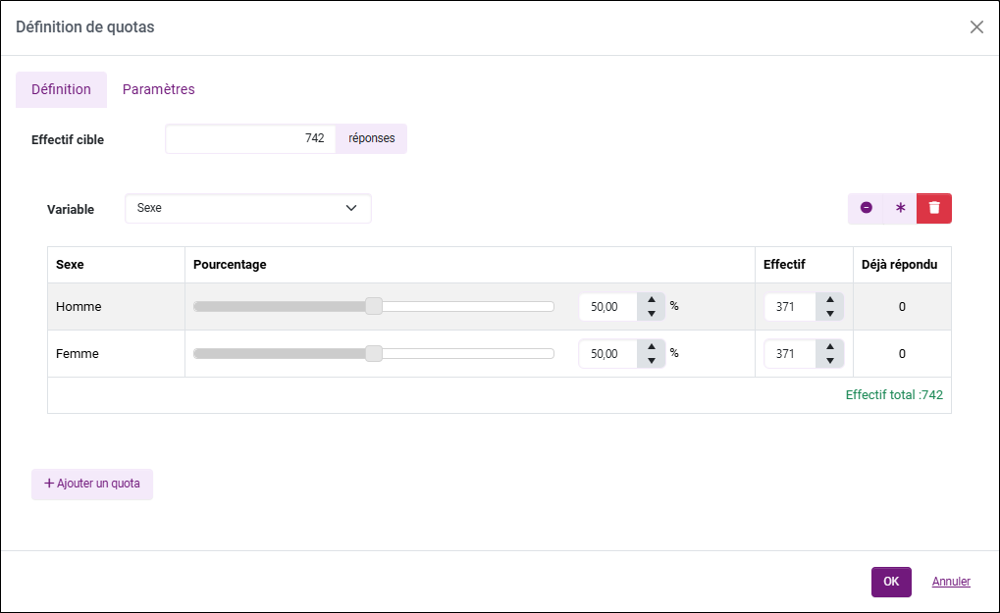

Appliquer des quotas
Rappels et définition
La méthode des quotas est une méthode d’échantillonnage qui consiste à s’assurer de la représentativité d’un échantillon en lui affectant une structure similaire à celle de la population de base. À titre d’exemple, les quotas sont souvent utilisés pour les sondages politiques.
EXEMPLE : Si les ouvriers hommes de 30 à 40 ans et urbains représentent 2 % de la population totale des électeurs en France : un échantillon de 1000 individus établis selon la méthode des quotas doit comprendre 20 personnes appartenant à cette catégorie.
Définir un quota
Pour mettre en place des quotas :
-
Rendez-vous dans la partie Campagnes, Liste des campagnes puis sélectionnez votre campagne.
-
Accédez à l'onglet Quotas.
-
Cliquez sur Définir des quotas.
-
Dans l'onglet Définition, renseignez l'effectif cible (le nombre de réponses que vous souhaitez obtenir) ou un pourcentage puis cliquez sur Ajouter un quota.
-
Sélectionnez une variable (de l'enquête de campagne ou de l'enquête de profil) et ajustez l'effectif ou le pourcentage pour chaque modalité.
EXEMPLE : Nous souhaitons que 50% des réponses de la campagne proviennent de femmes et 50% d'hommes.

REMARQUE : Vous disposez de raccourcis dans l'édition des quotas :
- : Réinitialiser les valeurs du quota en cours d'édition ;
: Réinitialiser les valeurs du quota en cours d'édition ;
- : Répartir les effectifs uniformément ;
- : Supprimer le quota en cours d'édition.REMARQUE : Vous ne pouvez définir qu'un seul quota à la fois.
-
(Facultatif) Dans l'onglet Paramètres, modifiez l'action à exécuter en cas de QuotaFull et de ScreenOut (aucune, afficher un message ou rediriger vers une page web) dans chaque langue configurée et attribuez des points pour chaque cas de figure :
-
QuotaFull : Le répondant correspond au profil recherché mais on a déjà atteint l’effectif cible. On n’a pas besoin de sa réponse. Il « sort » de l’enquête, on lui explique pourquoi il ne peut pas répondre à l’enquête. Ses réponses ne sont pas enregistrées (sauf si on conserve les observations hors quotas).
-
ScreenOut : Le répondant ne correspond pas aux profils recherchés. Il « sort » de l’enquête, on lui explique pourquoi il ne peut pas répondre à l’enquête. Les réponses ne sont pas enregistrées (sauf si on conserve les observations hors quotas).
ATTENTION : Si votre campagne est multilingue, pensez à changer la langue pour la rédaction de votre message.
-
-
Dans l'onglet Paramètres :
-
En cochant la case Prendre en compte les saisies en cours pour le calcul des quotas, si une saisie en cours permet d'atteindre le nombre de réponses souhaité, la saisie d'un nouveau répondant est alors bloquée.
Par défaut, les quotas sont calculés uniquement sur les saisies terminées. En activant cette option, toutes les saisies en cours seront également comptabilisées. Si une saisie est abandonnée sans être enregistrée (durée d'inactivité d'une heure), elle n'est plus prise en compte dans le calcul des quotas.
EXEMPLE : Nous diffusons un questionnaire pour pouvoir réserver une place de concert dans la limite de 200 places disponibles. 199 personnes ont déjà réservé leur place : si l'option Prendre en compte les saisies en cours pour le calcul des quotas est activée et que 2 personnes commencent à répondre au questionnaire, la personne s'étant connectée en deuxième ne pourra pas saisir de réponse (cas QuotaFull).
-
Cocher Conserver les observations hors-quota enregistre toutes les réponses et affiche même les réponses ScreenOut et QuotaFull dans le tableur de données. Cette option est cochée par défaut.
-
-
Cliquez sur OK.


ATTENTION : Une fois validés, il ne sera plus possible de supprimer les quotas. Cependant, vous pourrez toujours décocher l'option Activer les quotas.
ATTENTION : Un membre ayant tenté de répondre après l'atteinte des quotas ne peut plus saisir de réponses sur cette enquête, même après la désactivation des quotas.